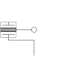

FlangeWithBearingAdaptorAdaptor to allow direct connections to the sub-connectors of FlangeWithBearing |

|
Information
This information is part of the Modelica Standard Library maintained by the Modelica Association.
Adaptor object to make a more visible connection to the flange and frame subconnectors of a FlangeWithBearing connector.
Parameters (1)
| includeBearingConnector |
Value: false Type: Boolean Description: = true, if bearing frame connector is present, otherwise not present |
|---|
Connectors (3)
| flangeAndFrame |
Type: FlangeWithBearing Description: Compound connector consisting of 1-dim. rotational flange and 3-dim. frame mounting |
|
|---|---|---|
| flange |
Type: Flange_b Description: 1-dim. rotational flange |
|
| frame |
Type: Frame_a Description: 3-dim. frame in which the 1-dim. shaft is mounted |